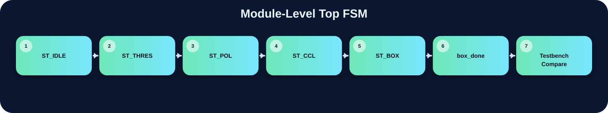

三份程式的功能目標相同，但硬體組織方式不同。Single FSM 版以 state-level 集中控制為主；Modular v21 版用 top FSM 啟動子模組；Single Submit 版則把所有 module 合併成同一份 .v 方便提交，但仍保留 module-level flow。

原始 Verilog 檔案已完整複製到 assets/code/，未做任何修改。
單一大型 FSM 架構。
Top FSM + threshold_v21_fast / polarity_v21_fast / ccl_v21_fast / boxing_v21_fast。
單一提交檔，但內部仍保留 threshold / polarity / ccl / boxing。